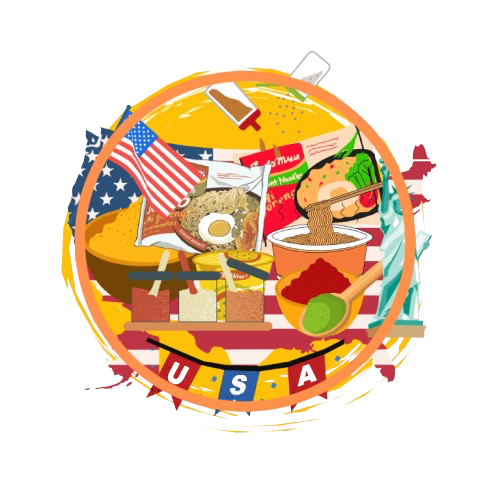

การใช้ชีวิตในอเมริการะหว่าง Work and Travel
การใช้ชีวิตในประเทศสหรัฐอเมริการะหว่าง Work and Travel เป็นยังไงกันบ้างนะ
การใช้ชีวิตก่อนเริ่มทำงาน ช่วงเวลาก่อนเริ่มทำงานเป็นยังไงบ้าง เราจะมีเวลาว่างก่อนเริ่มงานประมาณ 2-3 วัน ในการเตรียมตัวก่อนได้ทำงาน โดยสามารถทำให้เราปรับตัวและเรียนรู้กับสิ่งต่างๆจนให้เราเข้ากับวัฒนธรรมของเขาได้
การใช้ชีวิตระหว่างทำงาน การใช้ชีวิตระหว่างทำงาน จะได้เรียนรู้ทักษะในการทำงานหลายอย่างไม่ว่าจะเป็นทักษะใหม่ๆ การทำงานให้รวดเร็ว และความรับผิดชอบ และยังได้พบปะกับคนหลายสัญชาติในสังคมในการทำงานไม่ว่าจะเป็น คนอเมริกัน คนละติน คนจาไมกัน และคนเอเชียอื่นๆนั่นเอง ซึ่งการทำงานนี้ไม่ได้แค่ทำให้เรามีความสามารถในการทำงานมากขึ้นแต่ยังทำให้เราได้เรียนรู้และแลกเปลี่ยนวัฒนธรรมกับคนชาติอื่นๆอีกด้วย
การใช้ชีวิตหลังทำงาน คิดว่าหลายคนที่จบโครงการแล้ว ไม่ว่าจะทำแค่หนึ่ง หรือ สองงาน คงเหนื่อยกันน่าดู ดังนั้นโครงการนี้เมื่อเราจบงาน เราสามารถเที่ยวภายในประเทศได้ 30 วัน ซึ่งถือว่าเป็นสิ่งที่ดีมากๆเลย
ช่วงในการเริ่มโครงการ
มีด้วยกัน 2 ช่วง :
Spring Season: เป็นการเข้าร่วมโครงการในฤดูใบไม้ผลิได้ตั้งแต่ 7 มีนาคม – 7 กรกฎาคม เหมาะสำหรับน้อง ๆ ที่ปิดเทอมใหญ่ช่วงเดือน กุมภาพันธ์-เมษายน
Summer Season: เป็นการเข้าร่วมโครงการในฤดูร้อนได้ตั้งแต่วันที่ 7 พฤษภาคม – 7 กันยายน เหมาะสำหรับน้อง ๆ ที่ปิดเทอมใหญ่ช่วงเดือน เมษายน-มิถุนายน
หลังจบโครงการ: สามารถท่องเที่ยวต่อในประเทศสหรัฐอเมริกาได้อีกไม่เกิน 30 วัน
การเตรียมตัวไป Work and Travel
การเตรียมตัว Work and Travel ที่อเมริกา พร้อมสิ่งของจำเป็นจากไทย ถือเป็นเรื่องที่สำคัญมาก เพราะของบางอย่างอาจไม่มีขายในต่างประเทศ หรือราคาแพงกว่ามาก
อาหารและเครื่องปรุง
บะหมี่กึ่งสำเร็จรูป/โจ๊ก: อาหารสะดวกสบาย ปรุงง่าย แนะนำรสยอดนิยมเช่น รสต้มยำกุ้งที่มักไม่มีปัญหาผ่าน ตม.
• วุ้นเส้น: เหมาะสำหรับทำยำวุ้นเส้น แนะนำพกผงน้ำยำไว้ด้วย
• เครื่องแกง: เช่น แกงมัสมั่นและน้ำมะขามเปียก อย่าลืมเตรียมให้ครบ เพราะจะได้รสชาติที่คุ้นเคย
• เครื่องปรุง: น้ำปลา ซีอิ๊วขาว น้ำจิ้มสุกี้ น้ำมันหอย ควรพกซอสที่ใช้งานบ่อย ๆ ไว้ น้ำพริกเผา พริกป่น เป็นตัวช่วยที่ดี
• ของแห้ง: เช่น ปลากรอบ หอยลายปรุงรส ซุปซอง และชาไทยผง/เก๊กฮวย

เสื้อผ้าและอุปกรณ์ทำงาน
• เครื่องแบบทำงาน: ควรเตรียมกางเกงดำและรองเท้าทำงานที่เหมาะสม โดยเฉพาะรองเท้าแบบกันลื่น (เช่น Sketchers)
• เสื้อกันหนาว: เตรียมไปใช้บนเครื่องบินและในบ้านที่มีแอร์เย็น
• รองเท้าทำงาน: แนะนำ Sketchers ที่มีรุ่นสำหรับทำงานในครัวโดยเฉพาะ
ของใช้ส่วนตัวและยา
• แชมพู ยาสีฟัน: เตรียมไปเพียงพอสำหรับใช้ช่วงแรก ๆ เพราะที่อเมริกาหาซื้อได้ไม่ยาก
• ผ้าอนามัย: แนะนำพกไปให้เพียงพอ โดยเฉพาะสำหรับคนที่แพ้ง่าย
• ทิชชู่เปียก/ทิชชู่: เตรียมไป เพราะห้องน้ำที่อเมริกามักเป็นแบบแห้ง
• ยารักษาโรคพื้นฐาน: ยาพื้นฐาน เช่น ยาพารา ยาแก้ปวด ควรพกไปเพราะยาที่นั่นค่อนข้างแพง
• ขวดที่ฉีดน้ำชำระ: เนื่องจากบางคนอาจจะไม่ถนัดทิชชู่ จึงแนะนำให้พกไปด้วย
อุปกรณ์ทั่วไป
•หนังยาง/เทปกาว: ใช้รัดถุงหรือปิดปากบรรจุภัณฑ์ที่เปิดแล้ว
• แม่กุญแจ: ใช้ล็อคตู้หรือทรัพย์สินมีค่าในที่พัก
• กล่องใส่อาหาร: พกกล่องไมโครเวฟได้เพื่อเก็บอาหารเหลือ
• สำเนาเอกสาร: พาสปอร์ต DS-2019 ควรพกสำเนาและเก็บต้นฉบับให้ปลอดภัย
ของฝาก
• ของฝากเล็ก ๆ น้อย ๆ ให้เพื่อนร่วมงาน เช่น ขนมไทย ยาดม หรือของฝากพื้นบ้านเพื่อสร้างมิตรภาพ
หมายเหตุ: ตรวจสอบข้อกำหนดเกี่ยวกับการนำเข้าอาหาร และหลีกเลี่ยงอาหารที่มีเนื้อสัตว์หรือผลิตภัณฑ์ที่ห้ามเข้าในประเทศสหรัฐฯ